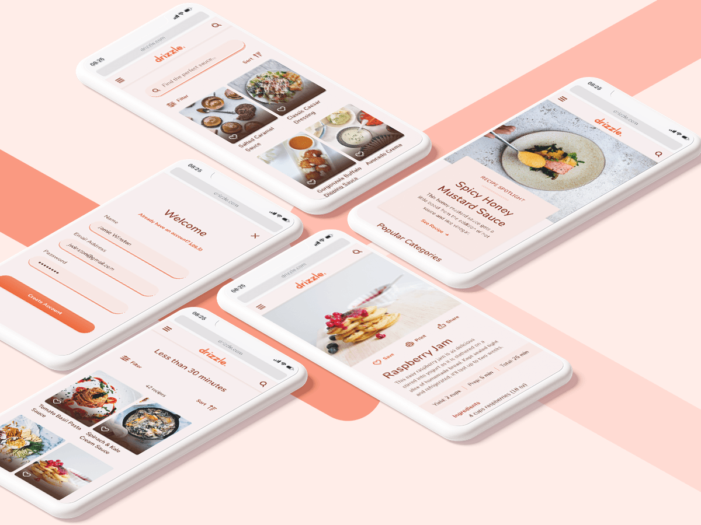

Drizzle is a conceptual recipe product I created for a course
project. The brief was pretty broad; the primary direction was to
create some kind of recipe product. I decided to narrow my focus
down to a niche category: sauce. Interpreting the brief in this
way allowed me to create a more unique product.
I was the UX/UI designer for this project. During the UX phase, I
did market research and user interviews, created user personas,
mapped out user flows and diagrams, sketched low-fidelity
wireframes, and conducted user testing. During the UI phase, I
built a mood board, developed screen designs from low-fidelity
sketches to high-fidelity wireframes, and created a style guide. I
then translated the mobile designs into various screen sizes to
make the product responsive and created mockups with the final
screens. I worked on the project from October through December
2020, and completed the redesign from mid-April through mid-May
2021.
My Process
Research
I interviewed several potential users during the UX research
stage. I used the information from these interviews to create
user personas that helped guide my design decisions.
Ideation
Before I began developing screen layouts, I established the
various paths that a user may take when trying to accomplish
their goals within the app. I did a task analysis and then
mapped out the user flows.
During the early sketching phase, I used the Crazy 8s rapid
sketching method to get a bunch of ideas down on paper before
refining them later.
Wireframe
After creating many rough sketches, I chose the strongest layout
for each screen and then refined it. I turned the polished
sketches into a rapid prototype and conducted a round of early
user testing. I used the feedback from testing to improve the UX
structure and flow as I turned my sketches into low-fidelity
digital wireframes.
Style Guide
I created a UI style guide for Drizzle to help me maintain
consistency across all screens and breakpoints.
View the full style guide document.
Design
With my style guide in hand, I applied UI styling to all of the
screens. This was an iterative process; I took each screen
through a number of changes, prompted by feedback from peers and
my mentor, as I developed the final designs.
View all of the screens.
Accessibility Redesign
I created Drizzle before I knew anything about inclusive design.
As I prepared my portfolio, I went back to Drizzle and realized
that the color contrast needed some work. I tried to tweak the
colors a bit, but it was not enough. I was initially reluctant
to make significant changes to the colors, but I felt like it
was essential to bring it up to code, so to speak.
Looking at Drizzle with fresh eyes and a few more projects under
my belt, I saw several opportunities to improve the product’s
UI. I increased the margins, gutters, and general spacing and
made other changes to refine the layout.
View the breakdown of the changes I made during the
redesign.

Mockups
After finalizing the screens, I created device mockups to show
my designs in their natural habitat.
View all of the mockups.
My biggest takeaway from this project is that designing for
accessibility doesn’t mean disregarding the visual aesthetic. It
means opening my mind, seeing things differently, and being even
more creative when thinking about solving the problem. It also
means being willing to let go of my initial ideas of what the
“perfect UI” looks like. Before I started the redesign, I loved my
color palette, and the idea of changing it was a little painful.
Comparing the before and after, I can confidently say that the
updated UI is more visually engaging.